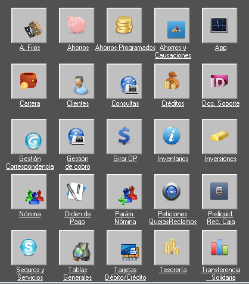

Etapas de desarrollo de software

Despliegue
En la etapa de despliegue se realiza la instalación del software para ponerlo en funcionamiento.
Se debe de tener en cuenta todo el entorno en el que debe funcionar tanto de hardware como de software tales como:
-
Equipos y su configuración física.
-
Redes de interconexión entre los equipos.
-
Acceso a sistemas externos.
-
Sistema operativo requerido.
-
Bibliotecas requeridas.
Con la aceptación por parte del cliente se da por terminado el proyecto.
Ejemplo de una aplicación instalada
